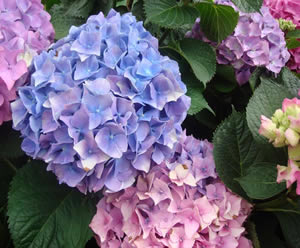
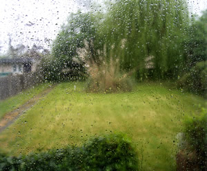
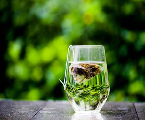

This is a webpage all about me. My likes, dislikes, hopes, dreams, and favorite things.
I am a digital multimedia and computer science teacher with thirteen years experience in the classroom. I have a husband named Rob (NOT the Rob from Brain Buffett!), two sons named Evan and Oliver, and one Siamese cat named Morgan. I started my career as a middle school Reading teacher, and became a technology teacher by accident.
In my spare time, I like to exercize, read, hike, cook, build Lego sets, and lead my son's Cub Scout den. My life goal is to write a book someday!

"We go to the moon, not because it is easy, but because it is hard." - John F. Kennedy
| Favorite Flower | Hydrangea |  |
|---|---|---|
| Favorite Time of Day | Rainstorm |  |
| Favorite Drink | Green Tea |  |
| Favorite Animal | Otter | |
| Favorite Song | "I wanna dance with somebody" by Whitney Houston | |
| Favorite Color | Slate Grey |
Email: mrscampbell@emailme.com
Phone: 123-345-7890